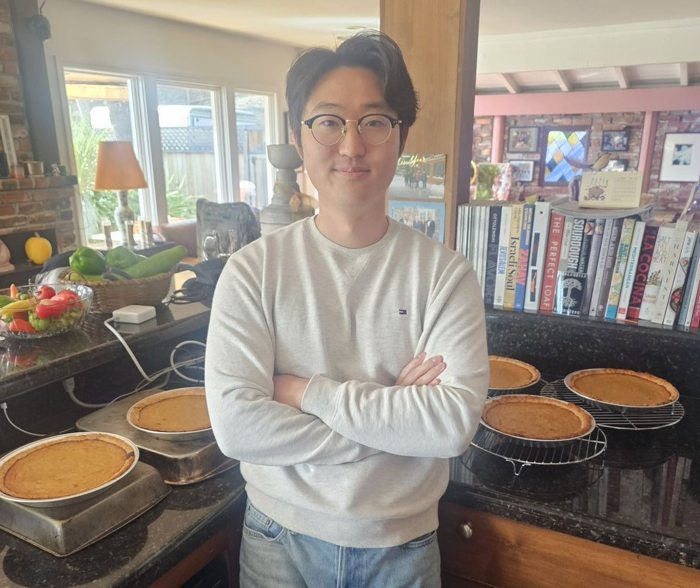
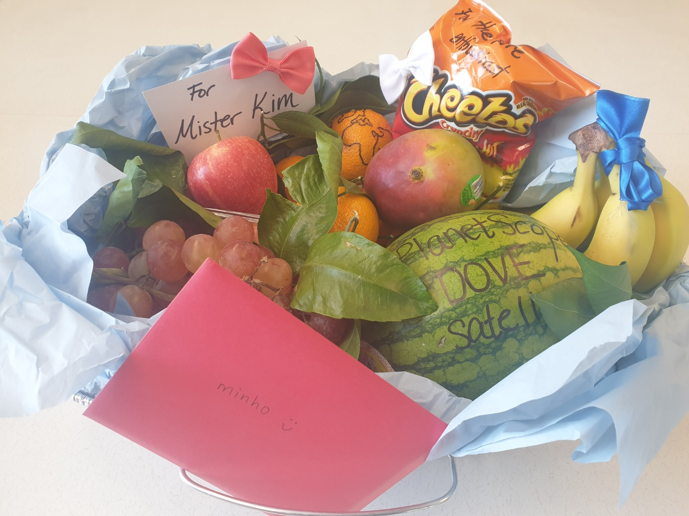

Teaching
To deliver instruction and mentorship that empowers the next-generation of students, researchers, and practitioners to tackle real-world challenges in sustainable development and disaster resilience.
Spatial Thinking
Understanding concepts in space–time dimensions and using tools of representation for spatial reasoning and inference.
See it in classSystems Thinking
Recognizing the holistic nature of complex systems by focusing on the interactions between parts and their dependence.
See it in classCritical Thinking
Developing the ability to reason in ways that promote novel, self-directed thinking and advance the status quo.
See it in classTeaching Experience
Teaching Feedback & Stories
Comments from Students
“Minho's sincerity and earnest effort was much appreciated, and his explanations were concise and effective.”
GEOG C188 student · Fall 2022
“The friendliness and informality of Prof Minho's class presentations was definitely a great asset for the students. He understood the questions and attempted to answer them in a clear, concise and correct manner.”
LDARCH C188 student · Fall 2022
“Minho is an excellent GSI and will make an incredible professor one day if that is the direction he chooses. He is a very clear and engaging lecturer and always is excited for people to ask questions.”
ESPM C289 student · Spring 2024
Stories from the Classroom
-

A Slice of Tradition
GEOG/LDARCH C188: Geographic Information Systems carried a long-forgotten tradition that I stumbled upon while browsing old Reddit discussion threads. Pumpkin pie. It started with Dr. John Radke, the course's long-time professor and GIS pioneer at UC Berkeley, who spent his long tenure baking homemade pies for his students!
In 2023, when Xihan Yao took over as Lead Instructor for GEOG/LDARCH C188, we visited Dr. Radke to learn his legendary recipe and baked a batch of pumpkin pies from scratch for that semester's class. Prof. Radke was our academic advisor and it felt special to revive his tradition once more and serve the students. The best parts of teaching are not always in the textbook -- sometimes it takes a slice of life (pumpkin pie).
-

The Fruit Basket
Fall 2022 was my first semester as lead instructor. I was teaching GEOG/LDARCH C188: Geographic Information Systems at UC Berkeley to a class of over 170 students from 35+ programs across campus.
At the end of the semester, my students surprised me with a special heart-warming gift. They prepared a fruit basket composed of an assortment of GIS/remote sensing inside jokes! A watermelon was labeled "PlanetScope DOVE Satellite" referencing how small those cubests really are. An orange came etched with hand-drawn map-projection lines, representing our discussion of coordinate reference systems when peeled flat. They even included a bag of spicy Cheetos to highlight my wildfire research that I shared during class.